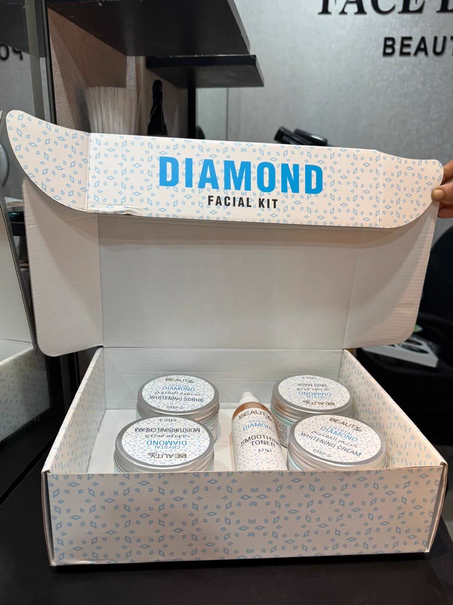
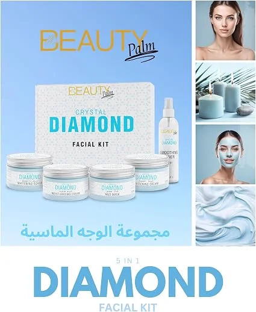
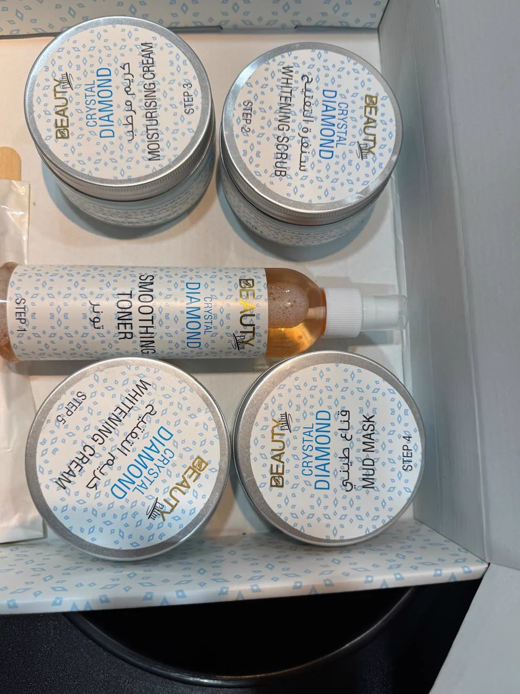
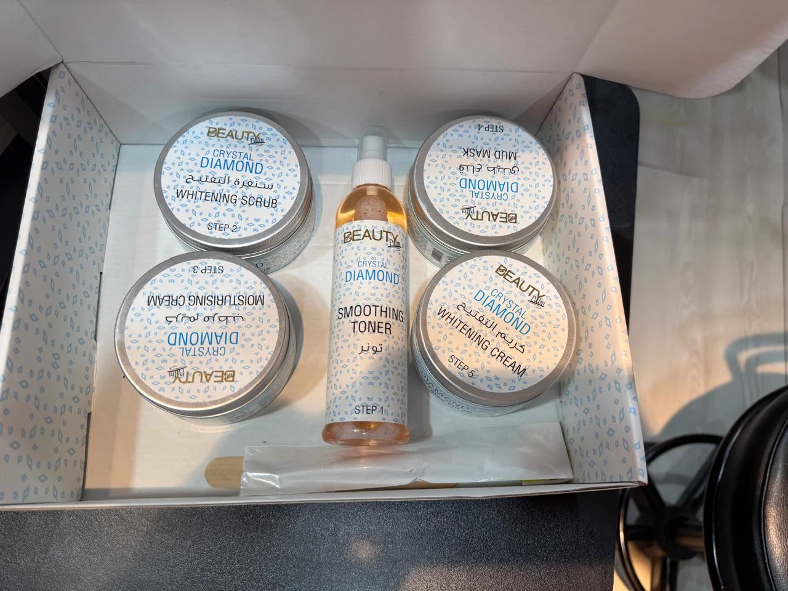
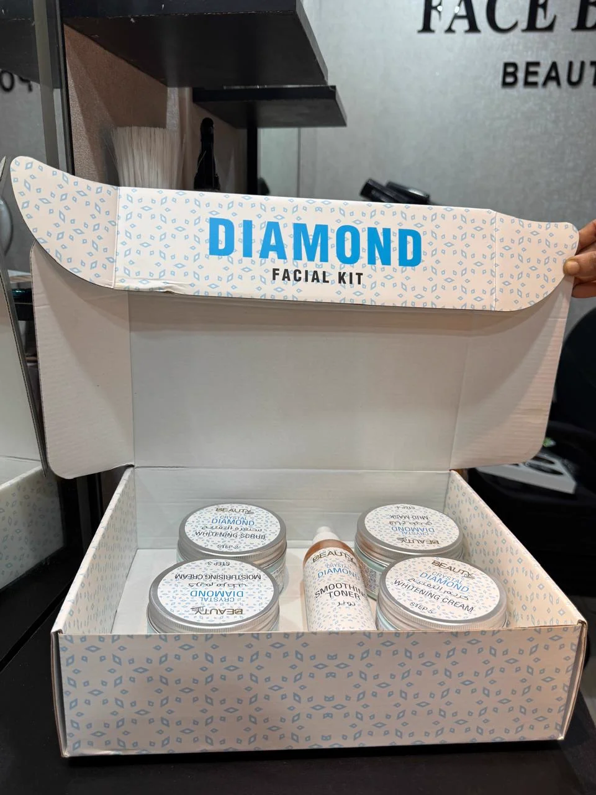

Give your skin a fresh, smooth, and radiant appearance with the Beauty Palm Diamond Crystal Facial Kit, now available at Face by Sumona near Tongi, Bangladesh. Specially designed to deeply cleanse, gently remove impurities, and revitalize tired or sun-exposed skin.
This relaxing facial treatment is designed to deeply cleanse the skin, gently remove dirt and impurities, and improve the look and feel of uneven or tired skin.
Its nourishing formula helps support a softer, smoother complexion while soothing the appearance of dryness, irritation, and pollution-related dullness.
The treatment is an ideal choice for women who are regularly exposed to sunlight, dust, and environmental pollution. It leaves the skin feeling clean, refreshed, supple, and beautifully glowing—making it a wonderful option before weddings, parties, or other special occasions.
Every step in the Beauty Palm Crystal Diamond Facial Kit is formulated to work in harmony, cleansing, renewing, and deeply conditioning the skin.
Refreshes the skin, balances moisture, and preps the pores to absorb subsequent active ingredients and nutrients.
Gently exfoliates dead skin cells, unclogs congested pores, and sweeps away stubborn surface impurities and excess oil.
Deeply conditions and hydrates the skin, replenishing lost moisture to soothe dryness and promote a supple texture.
Enriched with natural mineral clay to draw out deep-seated impurities, absorb excess sebum, tighten pores, and leave skin clarified.
Provides a soothing, nourishing massage that enhances natural luminosity, improves the look of dull skin, and locks in a long-lasting diamond glow.
Original photos of our authentic Beauty Palm Crystal Diamond Facial Kit at Face by Sumona in Tongi.





The Beauty Palm Crystal Diamond Facial is an intensive, revitalising treatment tailored for women looking to counter the daily toll of weather, environmental pollution, and stress on their skin. Living and travelling around Tongi, Gazipur, and Dhaka exposes the face to persistent dust, intense sunlight, and atmospheric grime that settle into pores and cause a dull, tired appearance.
This multi-step kit works methodically to lift impurities, shed dull outer cells, and saturate the skin with essential moisture and minerals. Certified beautician Sumona personally guides each application, ensuring the pressure, duration, and sequence cater precisely to your skin's texture.
To achieve the best possible glow and longevity from your treatment, a little preparation and mindful post-treatment care will ensure your skin stays radiant and calm.
Before your session, inform Sumona if your skin is feeling extra sensitive, if you have active sunburn, or if you recently underwent bleaching, threading, or waxing. For clients with sensitive skin or allergies, a quick patch test is always recommended prior to applying the full kit.
Booking your Beauty Palm Crystal Diamond Facial is quick and straightforward. You can reach out directly via call or WhatsApp at +880 1933-211642 to schedule your session.
Face by Sumona is dedicated exclusively to women, providing a clean, quiet, and relaxing salon space where you can unwind in complete comfort. Certified beautician Sumona has served clients across Tongi, Gazipur, and Uttara since 2004 with personalized, trustworthy beauty care.
It is an advanced 5-step facial kit treatment that combines a smoothing toner, whitening scrub, moisturising cream, mineral mud mask, and whitening cream to deeply cleanse, hydrate, detoxify, and illuminate tired or dull skin.
The kit includes five sequential products: Step 1 Smoothing Toner, Step 2 Whitening Scrub, Step 3 Moisturising Cream, Step 4 Mud Mask, and Step 5 Whitening Cream, alongside a dedicated application tool.
The Beauty Palm Diamond formula is designed to be gentle and soothing. However, because skin types vary, certified beautician Sumona evaluates your skin first and can conduct a patch test for sensitive skin before proceeding.
We recommend booking your facial 1 to 2 days before your wedding, reception, or party. This gives the skin time to absorb the nourishing treatments, calm down completely, and show its most radiant glow on the day of the event.
A session typically takes approximately 45 to 60 minutes. To book your appointment, call or WhatsApp Sumona at +880 1933-211642. The salon is open 7 days a week, 10:00 AM to 9:00 PM.